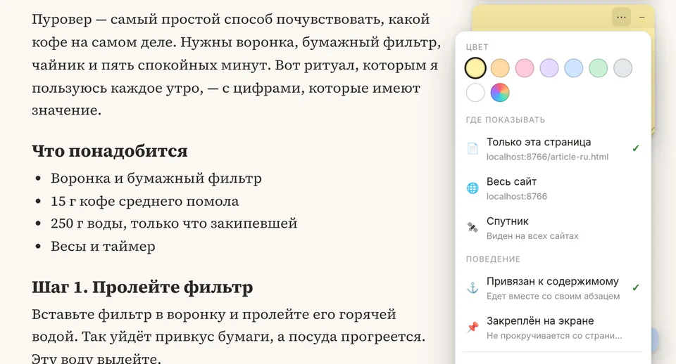
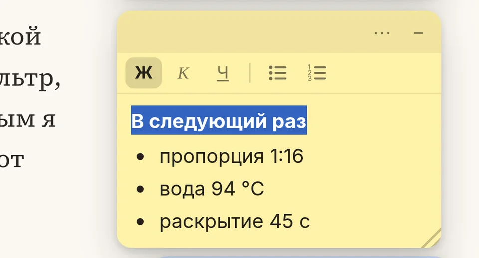
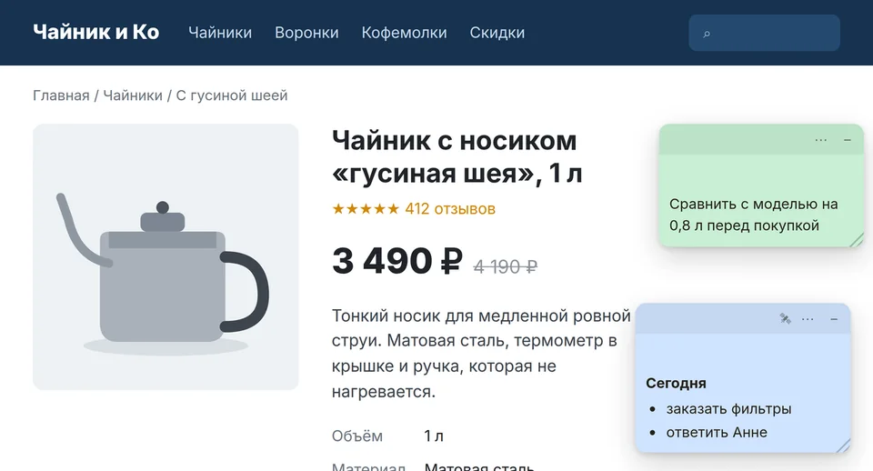
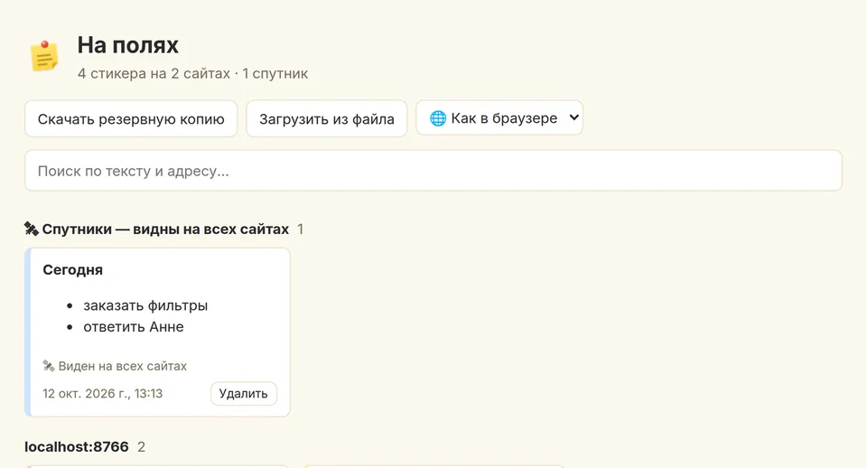

Стикер держится своего абзаца
Расширение запоминает абзац или картинку, к которым относится заметка, а не пиксели экрана. Меняйте размер окна, монитор, дайте странице догрузиться — стикер рядом со своим абзацем.
Оставьте заметку рядом с любым абзацем на любом сайте. Вернитесь завтра, откройте страницу в узком окне, пусть сайт добавит сверху баннер — стикер всё равно рядом с тем же абзацем.
Бесплатно · Без аккаунта · Заметки не покидают ваш браузер
Расширение запоминает абзац или картинку, к которым относится заметка, а не пиксели экрана. Меняйте размер окна, монитор, дайте странице догрузиться — стикер рядом со своим абзацем.
Всё сохраняется по мере ввода. В любой момент можно скачать резервную копию, а если страница изменилась так, что абзаца больше нет, расширение честно об этом скажет, а не спрячет стикер.
Без аккаунта, серверов, аналитики и рекламы. Это важно, когда расширение видит все открытые страницы.

Восемь «бумажных» цветов и любой свой. Показывать стикер только на этой странице или на всём сайте. Привязать к содержимому или закрепить на экране, чтобы он не уезжал при прокрутке.

Оформляйте так, как думаете: заголовок жирным, шаги списком. Вставленный текст приходит чистым, без стилей сайта.

Стикер-спутник виден на любом сайте: список покупок, дела на сегодня, напоминание, которое нельзя упускать из виду.

Поиск по тексту и адресу, переход на страницу, где оставлена заметка, резервная копия в файл и восстановление на другом компьютере.
Исследователям и студентам, которые читают статьи, техническим писателям и аналитикам, которые разбирают документацию, поддержке и тестировщикам, которые каждый день проверяют одни и те же экраны.
Да. Расширение бесплатное и без рекламы. Если когда-нибудь появится синхронизация между устройствами, она будет дополнительной возможностью.
Только в вашем браузере, в хранилище для расширений. Расширение не делает сетевых запросов. Подробности — в политике конфиденциальности.
Чтобы показывать стикеры на любой открытой странице и находить абзац, к которому привязана заметка. Расширение не меняет текст, ссылки и формы сайта и не записывает то, что вы вводите.
Расширение ищет абзац по месту на странице и по началу текста. Если абзаца больше нет, стикер остаётся на прежнем месте с пометкой «Исходное место на странице не найдено» — его можно переставить.
Автоматически пока нет. Скачайте резервную копию на странице «Все стикеры» и загрузите её на другом компьютере.
В Chrome и в браузерах, которые ставят расширения из Chrome Web Store: Яндекс Браузер, Edge, Opera, Brave. Firefox и Safari пока не поддерживаются.
Русский, английский, испанский, немецкий и китайский (упрощённый). Язык берётся из браузера, его можно сменить в меню расширения.
Браузер удалит их вместе с расширением. Если хотите сохранить заметки, сначала скачайте резервную копию.
Нашли ошибку или есть идея? Напишите, на какой странице это случилось и что вы ожидали увидеть, — обычно этого хватает, чтобы всё исправить.
Контакты скоро появятся.